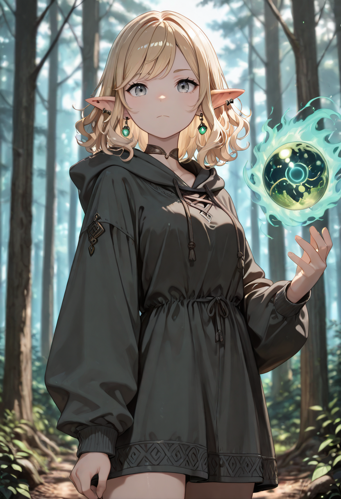
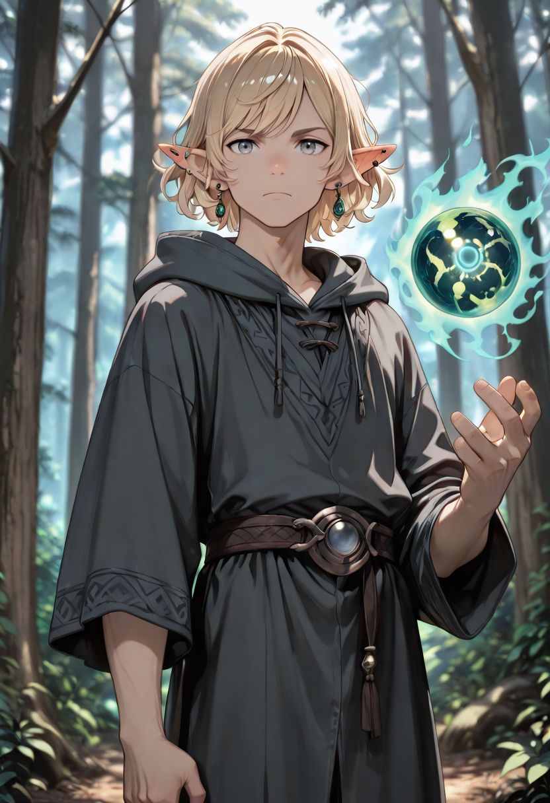
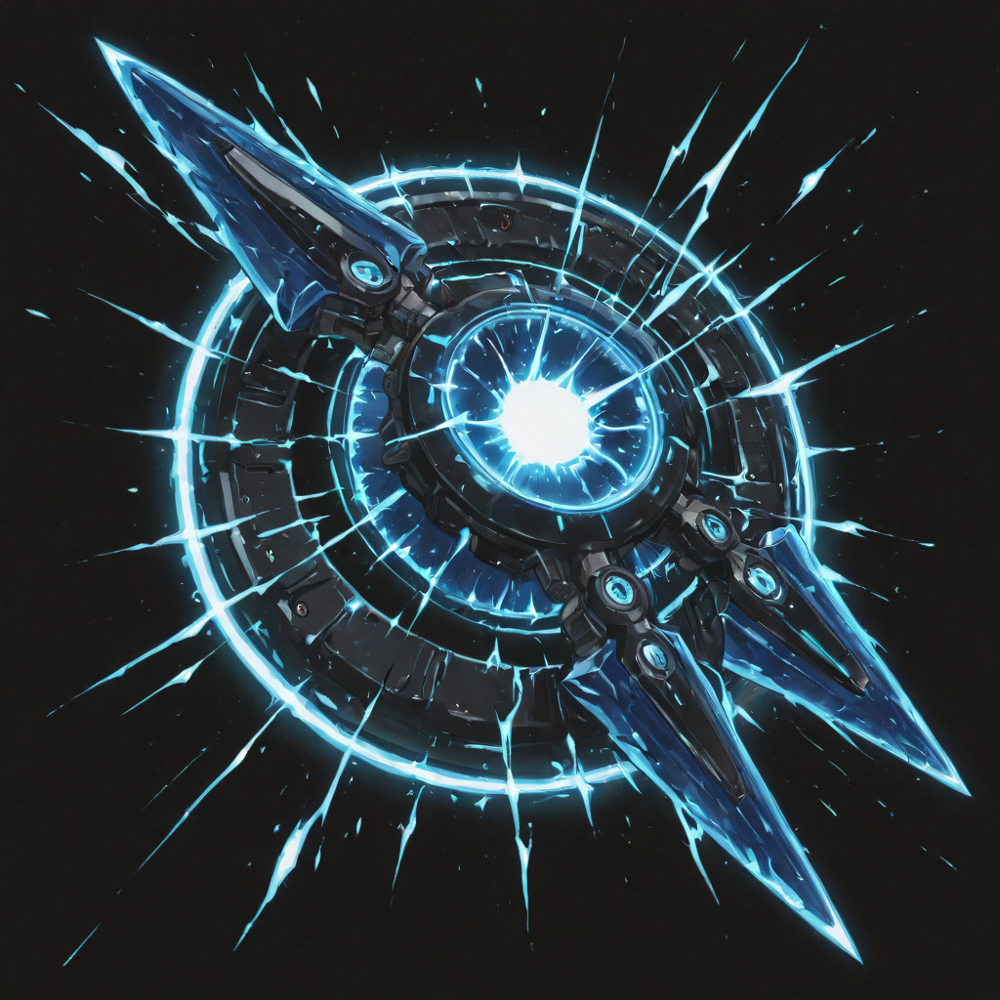
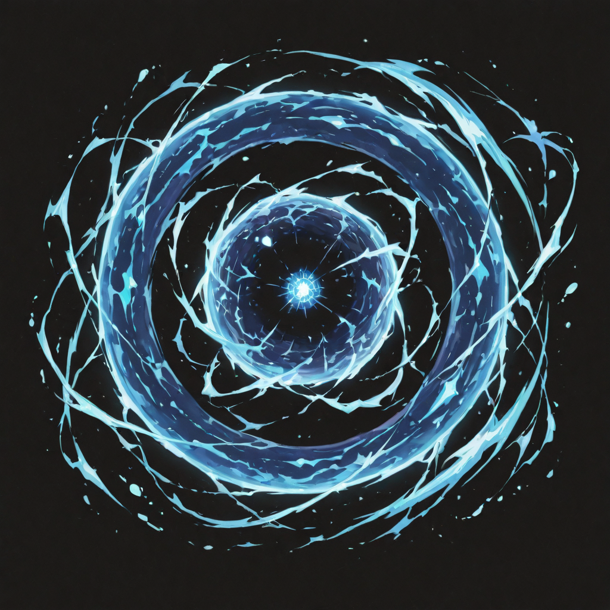
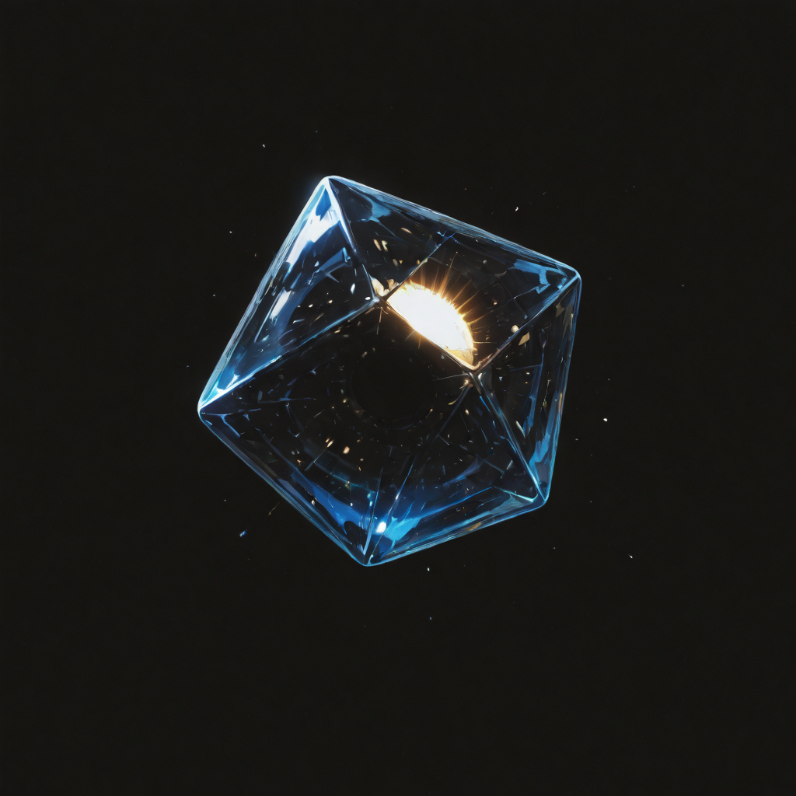
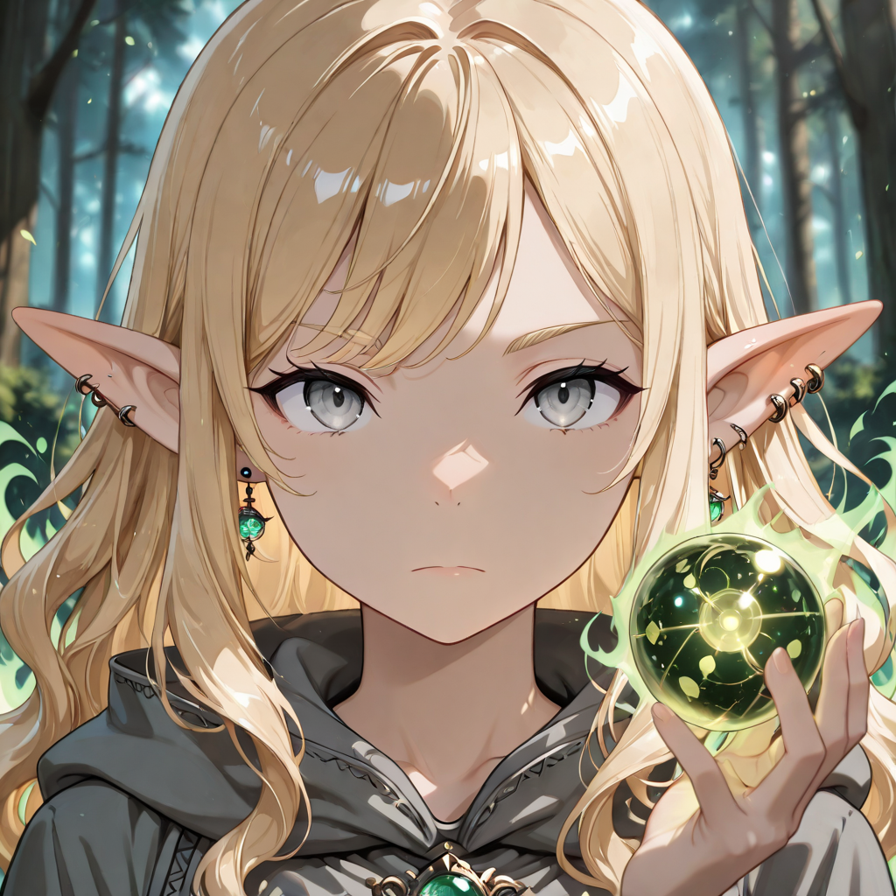

The Eye Is Not Safe
The Storm Elves did not originally come from the Empire's forests. They come from the high ridgelines where the wind is not a metaphor for change but an actual structural force that sculpts stone, reroutes rivers, and determines which things survive the century. They spent their lives in elemental exposure that would disable most creatures, and they developed , through sheer necessity , nervous systems that interfaced with atmospheric disturbance as if it were a native language.
Malicott found them, as she finds most of her soldiers, at the moment of their deaths. The storm that killed the Storm Elves almost always involved lightning , they stood in the wrong place during the right storm, or the right place during the wrong storm, a distinction that means nothing to the result. What they retained in undeath was the current itself: arcing, discharging, unable to stop moving.
They are the fastest consistent damage-dealers in the Araldi branch. The Sun Valkyrie hits harder in one strike; the Storm Elf hits more frequently and is significantly harder to pin down. Tacticians debate which is preferable. The Storm Elves do not participate in this conversation , they are already somewhere else.
Tactical Data

Lightning Claw
Base Skill
Personal Storm
Active Skill
Wind Instinct
PassiveGallery
